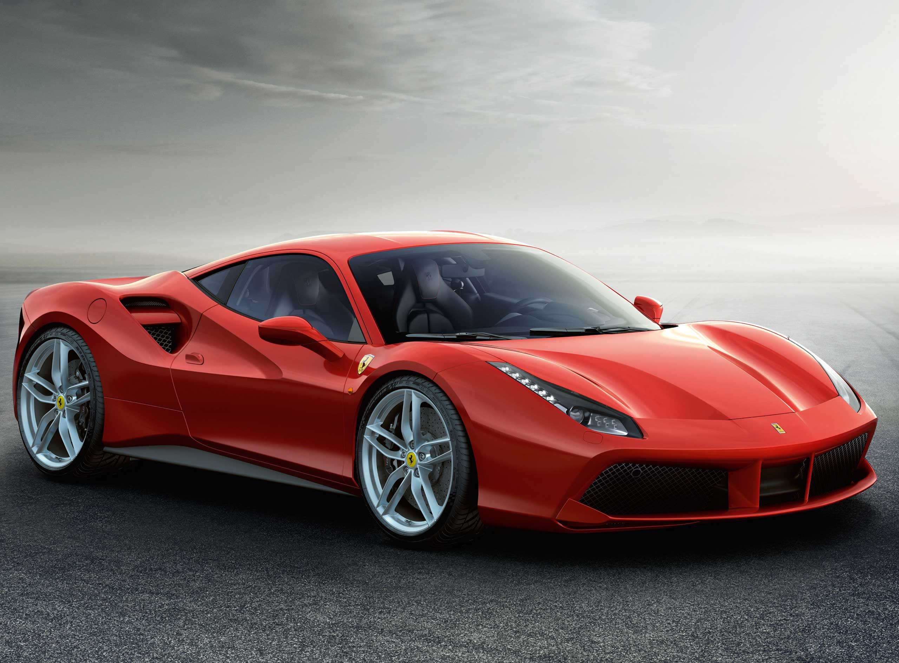

Autos deportivos

Potencia y velocidad
Los autos deportivos se caracterizan por su rendimiento, aceleración, diseño aerodinámico y respuesta en carretera.
- Motores de alto rendimiento.
- Diseño aerodinámico.
- Suspensión deportiva.
- Sistemas de frenado mejorados.
Diseño especializado
Generalmente poseen motores potentes, suspensión deportiva y carrocerías diseñadas para mejorar su desempeño.